Section 4.5 Hyperbolas
|
By the end of this section, you should
|
Subsection 4.5.1 Definition of a hyperbola
| Definition 4.5: Let F and F′ be two fixed points in the plane. A hyperbola is the set of all points in the plane such that the difference of the distance of each point from F and F′ is constant. We shall denote the constant by 2a, for some a > 0. That is, a point P is on the hyperbola if and only if |PF′| – |PF| = 2a (or |PF|– |PF′| = 2a , whichever is positive) . The two fixed points F and F′ are called the foci of the hyperbola. |
Figure 4.24 illustrates the definition of hyperbola. Notice that the definition of hyperbola is similar to that of an ellipse, the only change is that the sum of distances has become the difference of distances. Here, for the difference of any two unequal values, we take the higher value minus the smaller so that a > 0 in the definition. The following terminologies, notations and relationships are also important with regard to a hyperbola. Refer to Figure 4.24 for the following discussion.
-
The line through the two foci F′ and F is called the principal axis of the hyperbola. The point on the principal axis at halfway between the two foci, that is, the midpoint of F′F, is called the center of the hyperbola and represented by C. We denote the distance between the two foci by 2c. That is, |F′F| = 2c or |CF| = c = |CF′|. Noting also that |PF′| < |F′F| + |PF| in ∆ PF′F and |PF′| – |PF| = 2a , you can show that a < c.
-
The points V′ and V where the hyperbola crosses the principal axis are called vertices of the hyperbola. The line segment V′V is called the transverse axis of the hyperbola. So, as V′ and V are on the hyperbola, the definition requires that |V′F| – |V′F′| = |VF′| – |VF|. From this, you can obtain that |V′F′| = |VF|. Consequently,
-
C is the midpoint of also V′V; that is, |CV′ | = |CV| .
-
|V′V| = |V′F| − |VF| = |V′F| − |V′F′| = 2a . (The length of the transverse axis is 2a)
-
|V′C| = a = |CV| (This follows from (i) and (ii). )
-
-
The eccentricity e of a hyperbola is defined to be the ratio of the distance between its foci to the length of its transverse axis. That is, similar to the definition of eccentricity of an ellipse, the eccentricity of a hyperbola is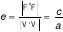(But here, e > 1 because c > a )
Checkpoint 4.5.1.
|
Use the definition of hyperbola and the given information to answer or solve each of the following problems.
|
Checkpoint 4.5.2.
1
docs.google.com/forms/d/e/1FAIpQLSfSNI6CXkmgeSZJh6v0WKkeD9MJ9g4pEQ9r0JaowD4ovNxj5w/viewform?usp=pp_url&entry.699375810=questions%2Ftop%2FMathematics-for-NS-%26-SS-23-24-Question-Bank%2FAnalytic-Geometry-%28NS%29%2FDefinition-of-a-hyperbola%2FAnalyzing-a-Hyperbola-with-Given-Foci-and-a-Point.xml&entry.2077830997=source%2Fanalytic-geometry%2Fsections%2Fsubsections%2Fsec-hyperbolas%2Fsubsec-definition-of-a-hyperbola.ptx
Checkpoint 4.5.3.
2
docs.google.com/forms/d/e/1FAIpQLSfSNI6CXkmgeSZJh6v0WKkeD9MJ9g4pEQ9r0JaowD4ovNxj5w/viewform?usp=pp_url&entry.699375810=questions%2Ftop%2FMathematics-for-NS-%26-SS-23-24-Question-Bank%2FAnalytic-Geometry-%28NS%29%2FDefinition-of-a-hyperbola%2FFinding-Foci-and-Points-on-a-Hyperbola-with-Given-Eccentricity.xml&entry.2077830997=source%2Fanalytic-geometry%2Fsections%2Fsubsections%2Fsec-hyperbolas%2Fsubsec-definition-of-a-hyperbola.ptxSubsection 4.5.2 Equation of a hyperbola
We are now ready to derive equation of a hyperbola. But, for simplicity, we consider first the equation of a standard hyperbola with center at origin. A standard hyperbola is the one whose principal axis (or transverse axis) is parallel to either of the coordinate axes.
I. Equation of a standard hyperbola with center at origin.
There are two possible situations, namely, when the transverse axis lies on x-axis (called horizontal hyperbola) and when the transverse axis lies on y-axis (called vertical hyperbola). We first consider a horizontal hyperbola with center C(0,0), vertices V′(−a, 0), V (a, 0) and foci
F′(−c, 0), F (c, 0).
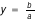
Notice that \(c^2\) − \(a^2\) > 0 as c > a . Hence, we can put
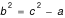
for some positive b. That is, 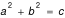
so that a, b, c are sides of a right triangle (see, Figure 4.25). The line segment BB′ perpendicular to the transverse axis at C and with endpoints B(0,b) and B′(0,−b) is called conjugate axis of the hyperbola. Observe that the midpoint of the conjugate axis is C and its length is |BB′| = 2b. ( b will play important role in equation of the hyperbola and its graph).
Now, for any point P(x,y) on the hyperbola it holds that |PF′| − |PF| = 2a .
That is,
or
Squaring both sides we get
which simplifies to
Again squaring both sides and rearranging, we get
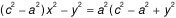
.
Recall that we set . So, using this in the above equation and dividing both sides by \(a^2b^2\), the equation becomes
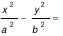
(Equation of horizontal hyperbola with center C(0,0), vertices (±a, 0), foci (±c, 0), where c\(2\) = a\(2\) + b\(2\) )
Note that this hyperbola has no y-intercept because if x = 0, then −\(y^2\) = \(b^2\) which is not possible. The hyperbola is symmetric with respect to both x-and y- axes.
Also, from this equation we get
Therefore, we have x ≥ a or x ≤ − a. This means that the hyperbola consists of two parts, called its branches. Moreover, if we solve for y from the equation we get as x → ∞.
This means the hyperbola will approach (but never reaches) the line as x gets larger and larger. That is, the lines are the asymptotes of the hyperbola.
In sketching a hyperbola, it is best to draw the rectangle formed by the line y = ±b and x = ±a and the to draw the asymptotes which are along the diagonals of the rectangle (as shown by the dashed lines in Figure 4.25). The hyperbola lies outside the rectangle and inside the asymptotes. It opens around the foci.
Example 4.5.4.
Find the foci and equation of the hyperbola with vertices V′(−3, 0) and V(3, 0) and passing through P(5, 16/3).
Solution.
It is horizontal hyperbola with center (0,0) and c = 5. In addition, as P(5, 16/3) is on the hyperbola we have that |PF′| − |PF| = 2a. That is,
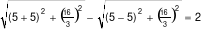
⇒ a =3. (So, its vertices are (−3, 0) and (3, 0) ).
Now, using the relationship , we get
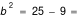
.
Therefore, the equation of the hyperbola is
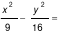
.
You may find the asymptotes and sketch the hyperbola.
For a vertical hyperbola with center at origin (i.e., when transverse axis lies on y-axis), by reversing the role of x and y we obtain the following equation which is illustrated in Figure 4.26.
Note:
-
\(a^2\)is always the denominator of the positive term.
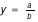
Example 4.5.5.
Find the foci and equation of the hyperbola with vertices V′(0,−1) and V(0, 1) and an asymptote y =2x.
Solution.
It is a vertical hyperbola with center C(0,0) and a = |CV| = 1. Since an asymptote of such vertical hyperbola is y = (a/b)x and the slope of the given asymptote is 2, we have a/b =2 ⇒ 1/b =2 ⇒ b = 1/2. Thus, \(c^2\) = \(a^2\)+\(b^2\) = 1 + 1/4 = 5/4 .
(You may sketch the hyperbola)
(II) Equation of shifted sec-hyperbolas:
The center of a horizontal or vertical hyperbola may be not at origin but at some other point C(h,k) as shown in Figure 4.27. In this case, we form the equation of the sec-hyperbolas by using the translation of the xy-coordinate system that shifts its origin to the point C(h, k). As discussed in Section 4.4, the effect of this translation is just replacing x and y by x−h and y−k, respectively, in the equation of the desired hyperbola.
Therefore, the standard equation of a horizontal hyperbola (transverse axis parallel to x-axis) with center C(h,k), length of transverse axis =2a, and length of conjugate axis =2b is
|
Center: C(h,k),
Vertices: V′ (h–a,k), V(h+a, k),
Asymptotes:
|
Similarly, the standard equation of a vertical hyperbola (transverse axis parallel to y-axis) with center C(h,k), length of transverse axis =2a, and length of conjugate axis =2b is
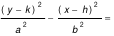 |
Center: C(h,k),
Vertices: V′ (h,k–a), V(h, k+a),
Asymptotes:
|
Example 4.5.6.
Find the foci, vertices and the asymptotes of the hyperbola whose equation is
and sketch the hyperbola.
Solution.
Dividing both sides of the equation by 4 yields
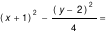
.
This is equation of a hyperbola with center C(−1, 2). Note that the ’\(y^2\)-term’ is positive indicates that the hyperbola is horizontal (principal axis y=2), a=1, b=2, and \(c^2\)= \(a^2\)+\(b^2\) ⇒ . As a result the foci are at and , vertices are at (−2,2) and (0,2) and the asymptotes are the lines y−2=±2(x+1), that is, y=2x+4 and y=−2x. Consequently, the hyperbola is sketched as in Figure 4.28.
Example 4.5.7.
Find the foci of the conic and sketch its graph.
Solution.
Group the x-terms and y-terms of the equation and complete their squares:
⇒ (Multiply both sides by −1)
⇒
⇒
⇒
⇒ (Next, divide each by 36)
⇒
This is standard equation of a hyperbola whose transverse axis is parallel to the y-axis (as its ’\(b^2\) term’ is positive) with center C (4,1), \(a^2\)=9 and \(y^2\)=4 . ⇒ . Thus, foci are F′ and F, and vertices (4, 1±3), i.e,, V′(4,–2) and V(4, 4). Moreover, the asymptotes are . Hence, the asymptotes are
Example 4.5.8.
Determine the locus or type of the conic section given by the equation 
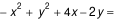
.
|
(i.e., A and C have opposite signs). Then, by completing the squares of x-terms and y-terms you can convert the equation to the following form:
 Now, letting
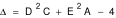 you can conclude the following:
|
Checkpoint 4.5.9.
|
For questions 1 to 9, find an equation of the hyperbola having the given properties and sketch its graph.
1. Center at the origin, a focus at (5, 0), and a vertex at (3, 0)
2. Center at the origin, a focus at (0,−5), and a vertex at (0, −3).
3. Center at the origin, x-intercepts ±3, an asymptote y = 2x .
4. Center at the origin, a vertex at (2, 0) , and passing through .
5. Center at (4, 2), a vertex at (7, 2) , and an asymptote 3y = 4x−10.
6. Foci at (–2, –1) and F2(–2, 9), length of transverse axis 6.
7. Foci at (1, 3) and (7, 3), and vertices at (2,3) and (6, 3).
8. Vertices at (±3, 0), and asymptotes y = ±2x
For questions 10 to 17 find the center, foci, vertices and asymptotes of the hyperbola having the given equation and sketch its graph.
18. Find an equation of hyperbola whose major axis is parallel to the x-axis, has a focus at
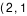 and its vertices are at the endpoints of a diameter of the circle 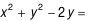 .
19. A satellite moves along a hyperbolic curve whose horizontal transverse axis is 24 km and an asymptote . Then what is the eccentricity of the hyperbola?
20 Two regions A and B are separated by a sea. The shores are roughly in a shape of hyperbolic curves with asymptotes and a focus at (30,0) taking a coordinate system with origin at the center of the hyperbola. What is the shortest distance between the regions in kms?
21. Determine the type of curve represented by the equation
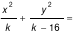
In each of the following cases: ( a) , (b) 0 < k < 16, (c)
|
Checkpoint 4.5.10.
3
docs.google.com/forms/d/e/1FAIpQLSfSNI6CXkmgeSZJh6v0WKkeD9MJ9g4pEQ9r0JaowD4ovNxj5w/viewform?usp=pp_url&entry.699375810=questions%2Ftop%2FMathematics-for-NS-%26-SS-23-24-Question-Bank%2FAnalytic-Geometry-%28NS%29%2FEquation-of-a-hyperbola%2FFinding-the-Hyperbola-with-Given-Focus-and-Vertices.xml&entry.2077830997=source%2Fanalytic-geometry%2Fsections%2Fsubsections%2Fsec-hyperbolas%2Fsubsec-equation-of-a-hyperbola.ptx
Checkpoint 4.5.11.
4
docs.google.com/forms/d/e/1FAIpQLSfSNI6CXkmgeSZJh6v0WKkeD9MJ9g4pEQ9r0JaowD4ovNxj5w/viewform?usp=pp_url&entry.699375810=questions%2Ftop%2FMathematics-for-NS-%26-SS-23-24-Question-Bank%2FAnalytic-Geometry-%28NS%29%2FEquation-of-a-hyperbola%2FFinding-Focus%2C-Vertices%2C-and-Asymptotes-of-a-Hyperbola.xml&entry.2077830997=source%2Fanalytic-geometry%2Fsections%2Fsubsections%2Fsec-hyperbolas%2Fsubsec-equation-of-a-hyperbola.ptx
Checkpoint 4.5.12.
5
docs.google.com/forms/d/e/1FAIpQLSfSNI6CXkmgeSZJh6v0WKkeD9MJ9g4pEQ9r0JaowD4ovNxj5w/viewform?usp=pp_url&entry.699375810=questions%2Ftop%2FMathematics-for-NS-%26-SS-23-24-Question-Bank%2FAnalytic-Geometry-%28NS%29%2FEquation-of-a-hyperbola%2FSketching-Hyperbola_Asymptote.xml&entry.2077830997=source%2Fanalytic-geometry%2Fsections%2Fsubsections%2Fsec-hyperbolas%2Fsubsec-equation-of-a-hyperbola.ptx
Checkpoint 4.5.13.
6
docs.google.com/forms/d/e/1FAIpQLSfSNI6CXkmgeSZJh6v0WKkeD9MJ9g4pEQ9r0JaowD4ovNxj5w/viewform?usp=pp_url&entry.699375810=questions%2Ftop%2FMathematics-for-NS-%26-SS-23-24-Question-Bank%2FAnalytic-Geometry-%28NS%29%2FEquation-of-a-hyperbola%2FFinding-a-Hyperbola-with-Given-Foci-and-Asymptotes.xml&entry.2077830997=source%2Fanalytic-geometry%2Fsections%2Fsubsections%2Fsec-hyperbolas%2Fsubsec-equation-of-a-hyperbola.ptx